Projets réalisés
11 projetsPilotage de la performance formation — Agence APOI, Lyon
Suite de tableaux de bord Power BI développée pour le pilotage complet de l'activité de formation : modélisation des données, gouvernance, suivi des KPI et contrôle qualité, destinée à être reprise par l'équipe Performance à Paris.
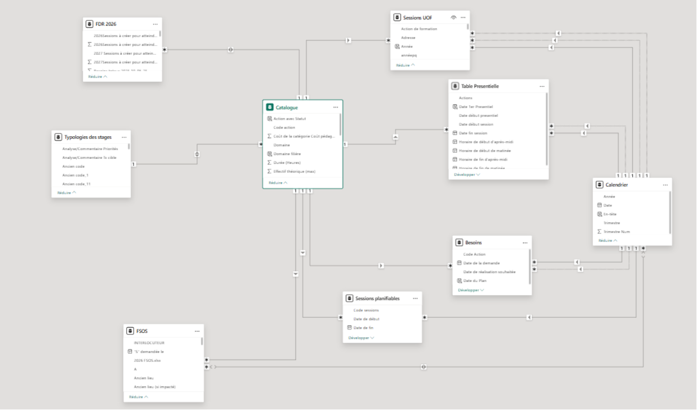
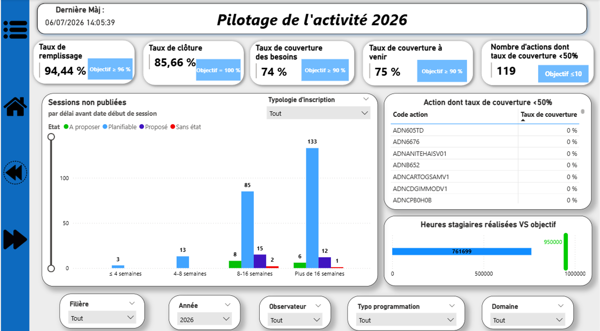
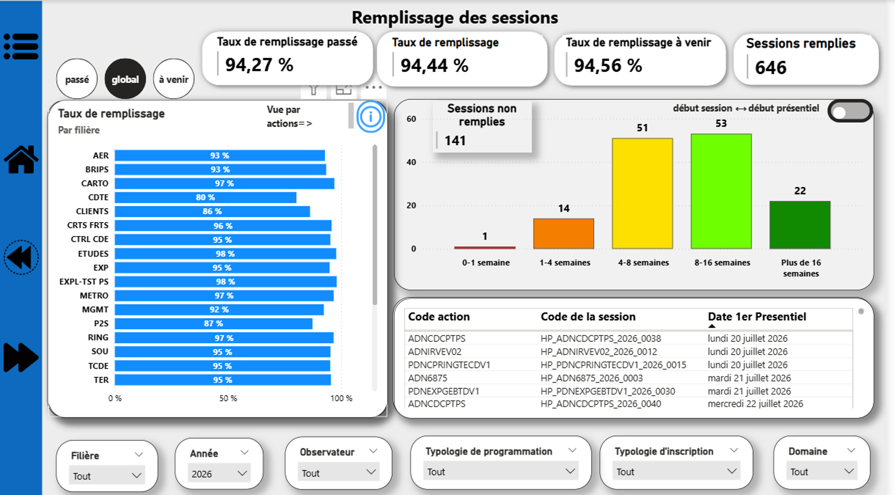
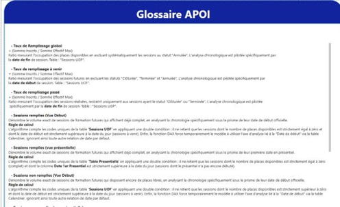
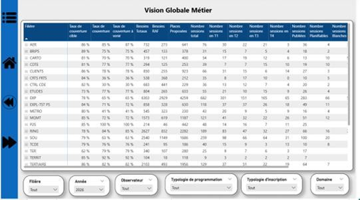
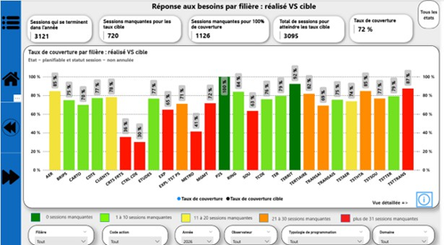
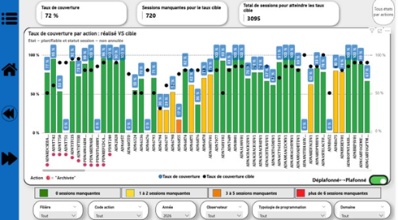
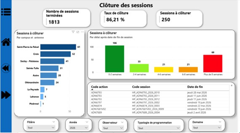
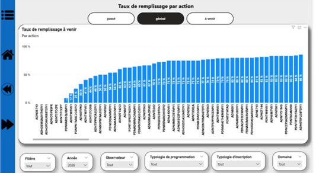
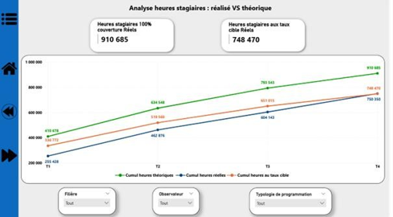
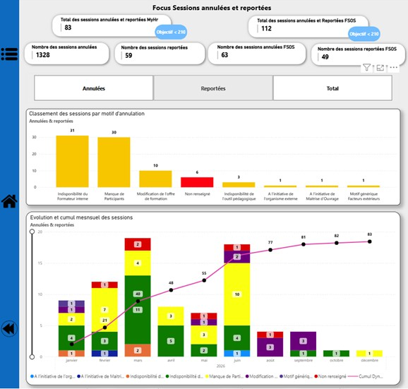
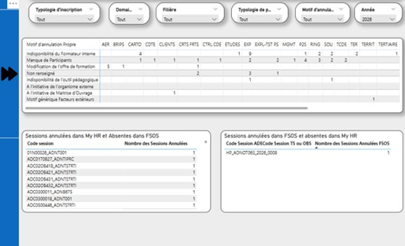
- Modèle relationnel en étoile (Catalogue, Sessions, Besoins, Calendrier) pour fiabiliser les calculs DAX.
- Glossaire de gouvernance unifiant le langage fonctionnel entre management, programmation et gestion.
- Suivi des KPI : taux de remplissage, de clôture, de couverture des besoins actuels et à venir.
- Vue opérationnelle ligne par ligne remplaçant les anciens fichiers Excel de l'équipe Gestion.
- Double vue plafonnée/déplafonnée pour arbitrer la sur- ou sous-programmation par action de formation.
- Contrôle croisé de cohérence entre systèmes (MyHR / FSOS) pour fiabiliser les indicateurs.
Pipeline météo & qualité de l'air
Récupération automatisée de données via deux APIs (météo, qualité de l'air), orchestrée toutes les 3h.
- Extraction API et gestion sécurisée des clés, nettoyage et structuration des données.
- Base PostgreSQL dédiée, insertion automatique via script Python.
- DAG Airflow pour une exécution automatique toutes les 3 heures.
Pipeline data Taxi & météo
Pipeline modulaire combinant traitement batch et temps réel pour l'analyse de données taxi et météo.
- Traitement batch (PySpark) pour les volumes historiques.
- Traitement temps réel (PyFlink) pour les flux continus.
- Orchestration unifiée des deux flux via Airflow.
Dashboard analytique IMDB
Analyse exploratoire et storytelling visuel sur un jeu de données de films.
- Nettoyage et préparation des données, analyse exploratoire (EDA).
- Statistiques descriptives et identification de tendances.
- Graphiques interactifs pour la restitution des résultats.
Pipeline ETL — Airflow + Docker
Pipeline ETL conteneurisé pour un transfert reproductible du Data Lake vers le Data Warehouse.
- Conception du pipeline ETL et gestion des dépendances.
- Orchestration des traitements avec Airflow.
- Conteneurisation Docker pour une exécution reproductible.
Modélisation SQL Server
Conception d'une base de données relationnelle, du besoin métier jusqu'aux procédures stockées.
- Modèle conceptuel et logique de données (MCD/MLD).
- Création des tables, contraintes et relations.
- Procédures stockées pour l'automatisation des traitements.
Intégration cloud — Snowflake & BigQuery
Stockage cloud et intégration automatisée de données dans une architecture Data Warehouse.
- Ingestion et stockage cloud des données.
- Transformation et intégration automatisée entre les deux plateformes.
.png) power bi
power bi
Analyse du Diabète
Vue d'ensemble interactive des facteurs liés au diabète à partir des données de 768 patients.
.png) power bi
power bi
Analyse quantitative des ventes 2023–2024
Modèle en étoile (ventes, clients, produits, fournisseurs, calendrier) et suivi des performances par fournisseur, pays et mois.
.jpg) power bi · english
power bi · english
Analyse visuelle des données Netflix
Tendances de la plateforme : langues, catégories d'âge, durée des contenus, répartition géographique.
.png) tableau
tableau
Tableau de bord des ventes
Analyse des performances par catégorie, segment, zone géographique et date.